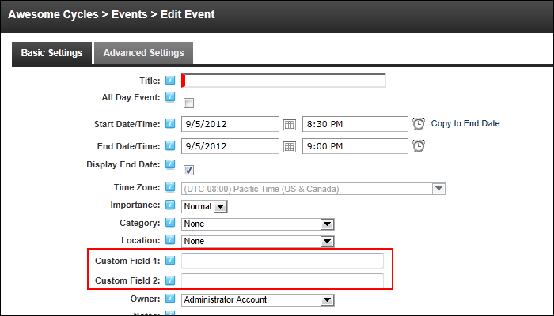
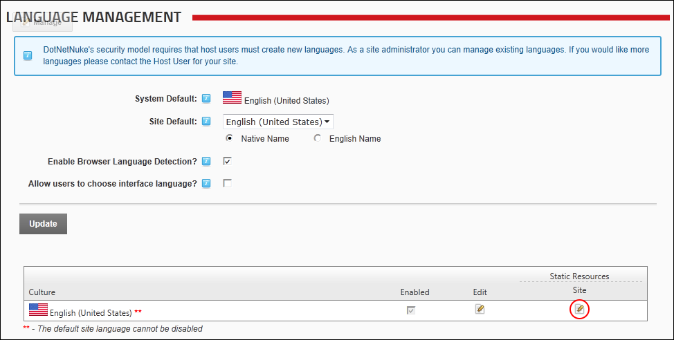
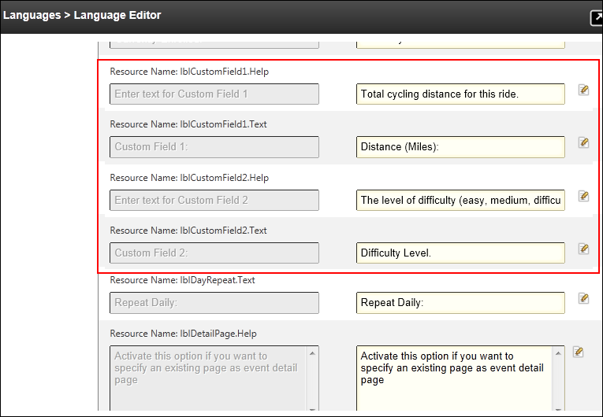

Configuring Custom Field Settings
How to enable one or two custom text box fields that will be displayed when adding and editing events on the Events module. Once the fields are enabled, the field information can be added using Admin > Languages module by updating the information displayed on the Edit Events (EditEvents.ascx) and the Event Settings (EventSettings.asx) pages of the Events module.
- Select Edit
 >
>  Edit Settings from the module actions menu - OR - Click the Edit Settings button (only visible if the Icon Bar is displayed). This displays the Event Module Settings page.
Edit Settings from the module actions menu - OR - Click the Edit Settings button (only visible if the Icon Bar is displayed). This displays the Event Module Settings page.
- Select the Display tab.
- Expand the Custom Fields section.
- At Display Custom Field 1, select from the following options:
- Mark
 the check box to enable Custom Field 1 to be displayed.
the check box to enable Custom Field 1 to be displayed. - Unmark
 the check box to disable this custom field.
the check box to disable this custom field.
- At Display Custom Field 2, select from the following options:
- Mark the check box to enable Custom Field 2 to be displayed.
- Unmark the check box to disable this custom field.

- Click the Update Settings link. The custom field(s) are now displayed on the Edit Event page, ready to have the field names updated.

- Navigate to Admin > Languages.
- Go to the Culture grid and click on the Edit
 button in the Static Resources - Site column.
button in the Static Resources - Site column.

- Using Resources folder list, navigate to and select this resource file: Local Resources > DesktopModules > Events > App_LocalResources > EditEvents.ascx. This will display the language file in the right pane.

- Locate the resource file named lblCustomField1.Help.
- In the Localized Values text box for lblCustomField1.Help edit the help text for Custom Field. E.g. Total cycling distance for this ride.
- In the Localized Values text box for lblCustomField1.Text edit the field name for Custom Field 1. E.g. Distance (Miles)
- In the Localized Values text box for lblCustomField2.Help edit the help text for Custom Field 2. E.g. The level of difficulty (easy, medium, difficult) of this ride.
- In the Localized Values text box for lblCustomField2.Text edit the help text for Custom Field 2. E.g. Difficulty Level.

- Click the Save Resource File link located at the base of the module.
- Repeat Steps 10 - 15 for each the resource file: Local Resources > DesktopModules > Events > App_LocalResources > EventSettings.ascx
- Optional. Navigate to the Events module and edit/add an event to view these fields.